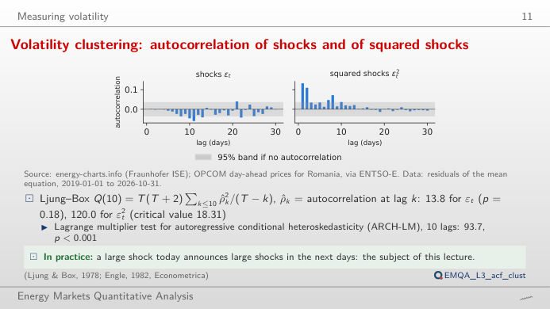
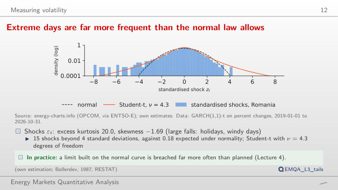
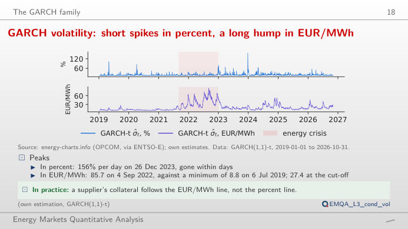
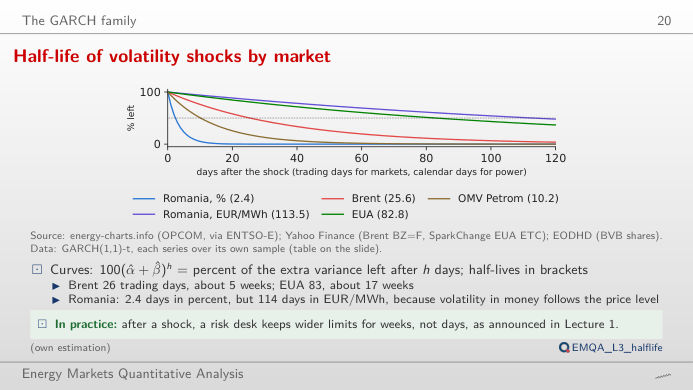
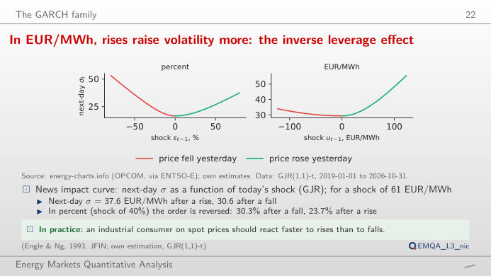
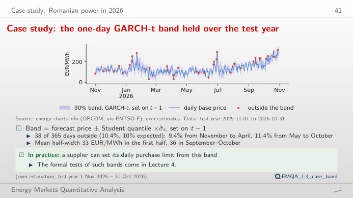

The slide of the lecture is on the left, the same figure on the right, recomputed in your browser from the course data (data/clean) when you move a control. The ▶ button moves the main parameter step by step. Under each figure: a readout, a question for the room and the Quantlet with the code of the chart. GARCH = generalised autoregressive conditional heteroskedasticity; the shocks are the residuals of the mean equation of the lecture (constant, AR(1..7) and day-of-week dummies).
Measuring volatility · The GARCH family · Case study: Romanian power in 2026
Measuring volatility
Volatility clustering: autocorrelation of shocks and of squared shocks

Answer
In the squared shocks. On the full sample the first-order autocorrelation of the % shocks is 0.001, but that of the squared shocks is 0.133, and the Ljung–Box statistic for ten lags rises from 13.8 (p = 0.18) to 120.0. Large moves, of either sign, follow large moves: the size of a shock is predictable even when its sign is not. Switch to EUR/MWh: the squared shocks are far more autocorrelated (Ljung–Box 1,519.5), because the price level itself moved from about 40 to over 400 EUR/MWh.
Extreme days are far more frequent than the normal law allows

Answer
About 0.18, i.e. none: the normal tail beyond 4 standard deviations has probability 6.3 × 10⁻⁵. Even after GARCH removes the clustering, the tails stay fat; the estimated Student-t, with ν = 4.27 degrees of freedom, expects 12.7. Move ν: with a small ν the Student-t curve reaches the far bins of the histogram, with ν above 30 it is close to the normal.
The GARCH family
GARCH volatility: short spikes in percent, a long hump in EUR/MWh

Answer
With the long-run variance held at its estimate, the persistence α + β rises from 0.75 to 0.99: shocks die out slowly, the path becomes smooth and stays high for weeks after a spike, and the half-life of a shock grows from 2.4 days to about 58 days. The Student-t log-likelihood in the readout falls: the data prefer the faster decay. In EUR/MWh the estimate itself is persistent (α + β = 0.994, half-life 113.5 days), because the level of the price drives the size of the changes.
Half-life of volatility shocks by market

Answer
Half-life = ln 0.5 / ln(α + β): 25.6 trading days (about five weeks) for Brent and 2.4 days for Romanian power in %. A shock to the volatility of a daily auction fades in days, one to oil volatility in weeks. EUA (EU emission allowances, 0.992, 82.8 trading days) and Romanian power in EUR/MWh (0.994, 113.5 days) are the most persistent. Near α + β = 1 a small change of persistence moves the half-life a lot.
In EUR/MWh, rises raise volatility more: the inverse leverage effect

Answer
To a fall. GJR (Glosten–Jagannathan–Runkle) adds γ·ε² on the days when the shock is negative. With the estimates, a shock of −2 standard deviations (−39.7%) gives a next-day σ of 30.3%, a shock of +2 standard deviations 23.7%. For the EUR/MWh shocks the estimate is γ = −0.13: there a rise of the price increases volatility more than a fall, as rises of the level come with larger changes. Set γ = 0 to recover the symmetric GARCH curve.
Case study: Romanian power in 2026
Case study: the one-day GARCH-t band held over the test year

Answer
Roughly: 10.4% outside against 10% nominal. The 30-day historical volatility with a normal quantile also leaves out 38 days (10.4%) at 90%, but its band reacts late to new shocks and drops abruptly when a large shock leaves the 30-day window. Change the coverage: at high coverage the normal quantile is too narrow for fat tails. At 99% the historical band leaves out 13 days (3.6%), the GARCH-t band 4 days (1.1%); at 95%, 8.2% against 6.3%.
Romanian day-ahead daily base price: OPCOM PZU via energy-charts.info (Fraunhofer ISE), 2019-01-01 to the cut-off of the lecture. Shocks: residuals of the OLS (ordinary least squares) mean equation on the daily log change (%) or the daily change in EUR/MWh. Model parameters: maximum-likelihood estimates of lectures/L3/analysis_L3.py. Market half-lives: GARCH(1,1)-t on Brent, EUA (EU emission allowances) and OMV Petrom (SNP) returns. Test-year forecasts: Quantlet EMQA_L3_case_band.